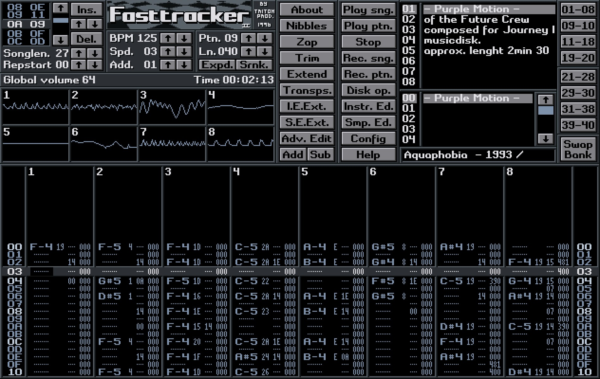

Welcome to FireTracker.

A versitile, cross-platform, open-source music tracker.
Features
Modular Interface
Adjust and move around every element as you see fit, and easily remove anything you don't use.
VST Support
Use any and all VST effects and instruments with ease, plus several built-in plugins.
Vast and vibrant community
FireTracker is a community-driven project, supported by many volunteers around the world.
Custom Plugins
Anyone can create their own plugins to suit their needs and expand functionality.